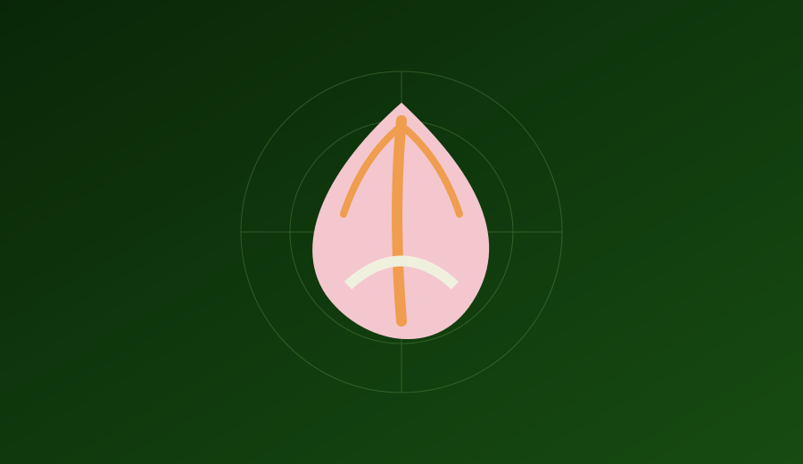
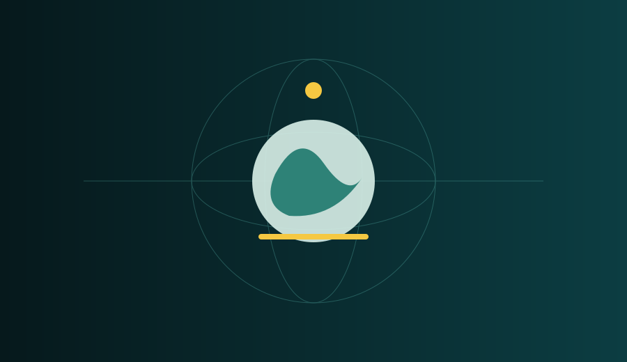
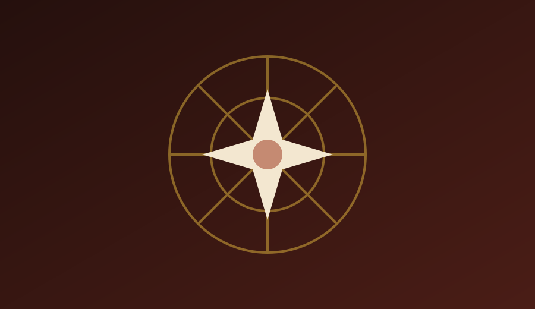
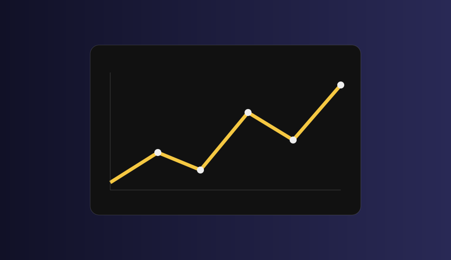

2025 — 2026
Bachelor’s Qualification Plan in Computer Science
Blekinge Institute of Technology (BTH)
Karlskrona, SwedenKARLSKRONA, SWEDEN
Machine Learning Engineer
Building and shipping machine learning systems end-to-end — from data and experimentation to production APIs, cloud deployment, and interactive AI experiences.
# machine learning engineer
class YasodaKishore:
role = "ML Engineer"
focus = [
"Machine Learning",
"AI Systems",
"Data & Cloud",
"Interactive AI"
]
def build(self):
return "ideas → systems → impact"
I build and ship machine learning systems end-to-end, from designing text and image classification models through training, validation, and deployment using Python, TensorFlow, PyTorch, and scikit-learn.
My work covers data pipelines, production APIs, cloud infrastructure, experimentation, reproducibility, testing, monitoring, and continuous improvement.
I have also worked on research combining interactive 3D avatars and large language models to deliver behavioral support in digital games.
Blekinge Institute of Technology (BTH)
Karlskrona, SwedenUniversity College of Engineering, Kakinada
CGPA: 8.3 · AI · Data Analytics · ML · NLP · NetworksAditya Junior College
Score: 91.3%Bhashyam English Medium School
Score: 93%
RESEARCH
AI PLATFORM
RECOMMENDER
ANALYTICSAccepted for presentation at IEEE GEM 2026 in Berlin, in the Game AI, Generation and Development Tools session. The work integrates a locally hosted Llama-3.2-3B-Instruct model with Unity-based 3D avatar rendering, real-time speech synthesis, WebSocket communication, and an empirical user study.
Paper accepted for presentation: “Does Embodiment Matter? Evaluating AI Avatars for CBT-Inspired Interventions in Games.”
Certification covering data preparation, model building, and evaluation workflows using Oracle Cloud Infrastructure Data Science tools.
Certification covering data cleaning, exploratory analysis, statistical analysis, regression, and machine learning fundamentals using Python.
I'm currently open to research collaborations, internship opportunities, and full-time roles in ML Engineering and Full Stack Development. Feel free to reach out!